Here you will also find some other classic apps for Windows 10, such as classic Calculator, Sticky Notes, and more.
Starting in Windows 8, the OS comes without the classic Windows 7 games. They are no longer included with Windows 11, Windows 10 and Windows 8.1. Here is a Windows 7 Games package which solves this issue. This Windows 7 Games package is compatible with all builds of Windows 11, Windows 10, Windows 8.1 and Windows 8.
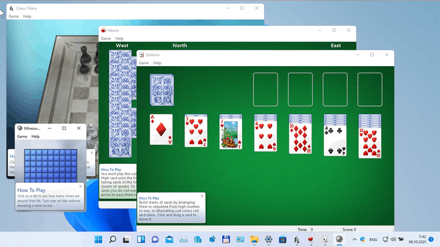It includes the following software:
For more details on how to install and use the games, check out this tutorial.
The package has been updated to version 3.1. It now supports Windows 11 and fixes the error "Error opening file for writing: C:\Windows\System32\en-US\cmncliM.dll.mui". The non-working Game Explorer will no longer be installed. The installer now supports HiDPI displays. Finally, the Internet Games set is now optional, since Microsoft has turned off the game servers, making it nearly impossible to play them.
The support for older Windows version, i.e. Windows 8.1/8 and Windows 10, remains intact. You can use this new version of the package on older Windows versions too.
The package can be installed in unattend mode. Use the /S command argument, where S is capitalized. Windows7Games_for_Windows_11_10_8.exe /S.
Games support the complete set of MUI (language packs), so they will run in your native language. The following languages are supported.
ar-SA, bg-BG, cs-CZ, da-DK, de-DE, el-GR, en-US, es-ES, et-EE, fi-FI, fr-FR, he-IL, hr-HR, hu-HU, it-IT, ja-JP, ko-KR, lt-LT, lv-LV, nb-NO, nl-NL, pl-PL, pt-BR, pt-PT, ro-RO, ru-RU, sk-SK, sl-SI, sr-Latn-CS, sv-SE, th-TH, tr-TR, uk-UA, zh-CN, zh-TW
9b0166d0569f6f5371b10521e105e957 *Windows7Games_for_Windows_11_10_8.exe
80b9ed664e92c955f8a6944075a33d96666d6400d6a6ea10977f68e64e152989 *Windows7Games_for_Windows_11_10_8.exe
Microsoft has removed the classic calculator app starting in Windows 10 and replaced it with a new UWP app that receives updates from the Store. Many people aren't happy with this change. The classic app loaded faster, and was more useful for mouse and keyboard users. Here you can get the classic calculator back in Windows 11 and Windows 10.
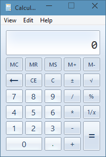 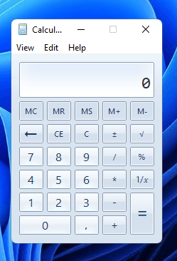This package supports Windows 11 and Windows 10 (both Windows 10 32-bit and Windows 10 64-bit).
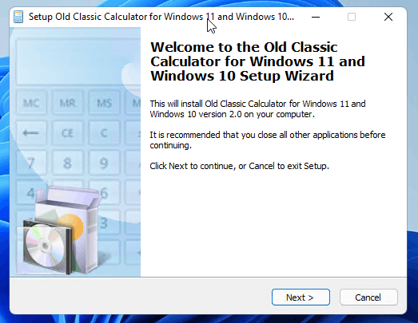The Calculator app will be revived completely, e.g. you will be able to launch it as "calc.exe" from the Run dialog or from the taskbar search box or from Cortana. It will have the same interface language as your operating system. If you will decide to revert to the Modern Calculator app, just uninstall the "Old Classic Calculator" app from the Settings -> Apps - > Apps & features.
It comes with almost the full set of MUI files, so it will be in your native language out-of-the-box. The following locale list is supported: ar-sa, bg-bg, cs-cz, da-dk, de-de, el-gr, en-gb, en-us, es-es, es-mx, et-ee, fi-fi, fr-ca, fr-fr, he-il, hr-hr, hu-hu, it-it, ja-jp, ko-kr, lt-lt, lv-lv, nb-no, nl-nl, pl-pl, pt-br, pt-pt, ro-ro, ru-ru, sk-sk, sl-si, sr-latn-rs, sv-se, th-th, tr-tr, uk-ua, zh-cn, zh-hk, zh-tw.
Starting in Windows 10 Anniversary Update, Microsoft replaced the classic desktop Sticky Notes app with a Universal app. For many users, the classic Desktop app is the more preferable option. It works faster, starts faster and has no Cortana integration.
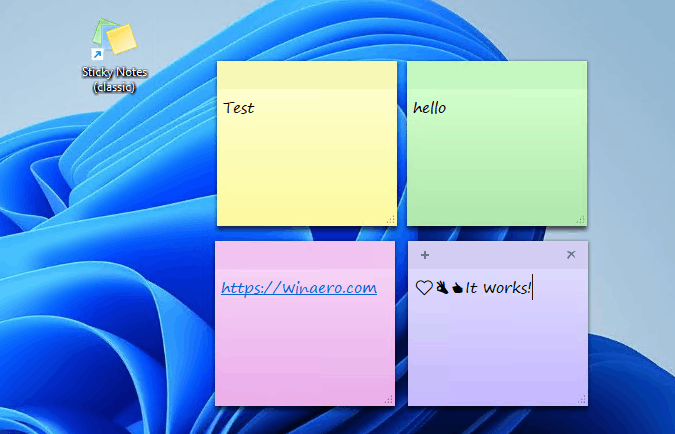 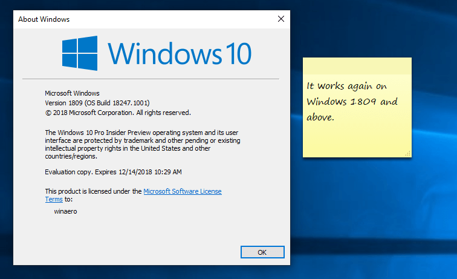Many prefer the good old classic Sticky Notes app because it consumes notably less system resources. It starts immediately and works much faster. The performance difference is especially visible on less powerful hardware like Atom and Celeron CPUs. The notes themselves are also a bit smaller, so users like their compact appearance more.
Here you can get the Classic Sticky Notes app for Windows 11 and Windows 10. This package fully supports Windows 11, as well as both Windows 10 32-bit and Windows 10 64-bit.
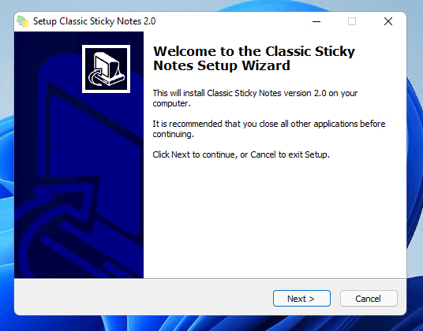It comes with almost the full set of MUI files, so it will be in your native language out-of-the-box. The following locale list is supported: ar-sa, bg-bg, cs-cz, da-dk, de-de, el-gr, en-gb, en-us, es-es, es-mx, et-ee, fi-fi, fr-ca, fr-fr, he-il, hr-hr, hu-hu, it-it, ja-jp, ko-kr, lt-lt, lv-lv, nb-no, nl-nl, pl-pl, pt-br, pt-pt, ro-ro, ru-ru, sk-sk, sl-si, sr-latn-rs, sv-se, th-th, tr-tr, uk-ua, zh-cn, zh-hk, zh-tw.
You can uninstall the app any time from Settings - Apps and features.
We have now two versions of the classic Task Manager, choose which one you need.
Windows 11 22H2 introduced an updated version of the Task Manager app. While it retains most features of the Windows 10-like Task Manager, it looks completely different. It no longer has the tab row. Now its sections are arranged into a side panel behind a hamburger menu on the left. Each page has a header with quick actions, e.g. to run a new app or terminate a running one.
If you are not happy with the changes Windows 11 22H2 brought, here is the classic Windows 10-like task manager for you. It is built on files from Windows 11 21H2, the last version of Windows 11 that contains the classic task manager. It will be installed side-by-side, and won't replace a single system file. Install it, and press Ctrl + Shift + Esc - voila, you now have the classic app!
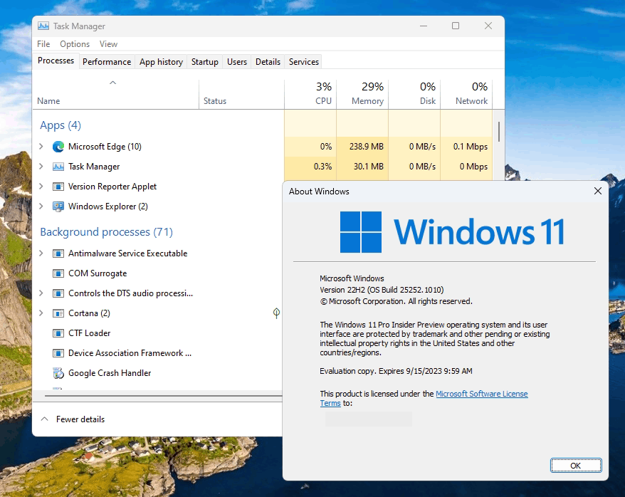 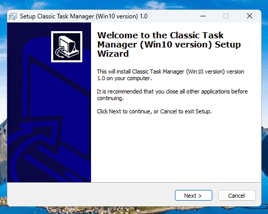 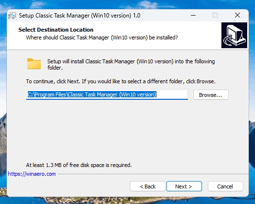It comes with the full set of MUI files, so it will be in your native language out-of-the-box. It is also smart enought to not fill you drive with redundant MUIs, so it will install only those languages that you have installed in your OS. The following locale list is supported: ar-sa, bg-bg, cs-cz, da-dk, de-de, el-gr, en-gb, en-us, es-es, es-mx, et-ee, fi-fi, fr-ca, fr-fr, he-il, hr-hr, hu-hu, it-it, ja-jp, ko-kr, lt-lt, lv-lv, nb-no, nl-nl, pl-pl, pt-br, pt-pt, ro-ro, ru-ru, sk-sk, sl-si, sr-latn-rs, sv-se, th-th, tr-tr, uk-ua, zh-cn, zh-hk, zh-tw.
You can uninstall the app any time from Settings > Apps > Installed apps. This will restore the default Task Manager of Windows 11.
Download Task Manager (Windows 10 version)
The new "modern" task manager was introduced in Windows 8. Windows 10 comes with the same Task Manager app. Although some of its functions are not bad, like the performance graph, one might not really need them. The old Task Manager is faster, bug-free and provides a more reliable workflow of task management for many users. Here is how you can get it back without replacing any system files or modifying permissions.
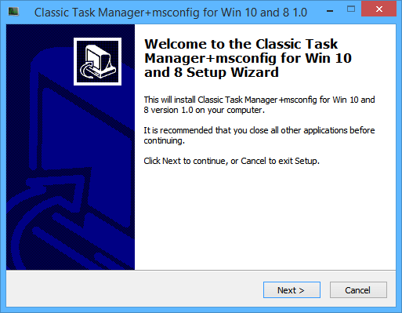 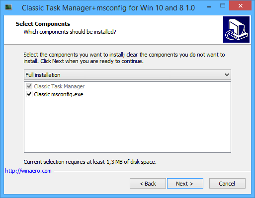 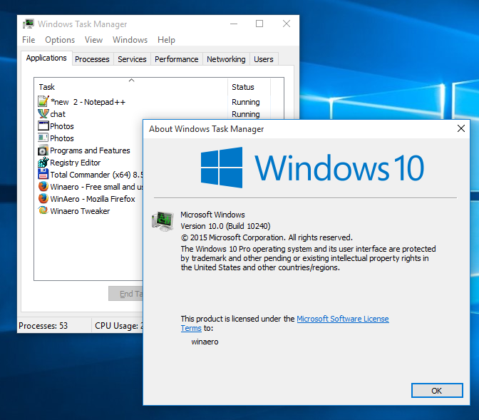The installer inlcude the classic msconfig.exe app with the startup tab in the msconfig UI so you will be able to manage your startup apps.
It comes with almost the full set of MUI files, so it will be in your native language out-of-the-box. The following locale list is supported: ar-sa, bg-bg, cs-cz, da-dk, de-de, el-gr, en-gb, en-us, es-es, es-mx, et-ee, fi-fi, fr-ca, fr-fr, he-il, hr-hr, hu-hu, it-it, ja-jp, ko-kr, lt-lt, lv-lv, nb-no, nl-nl, pl-pl, pt-br, pt-pt, ro-ro, ru-ru, sk-sk, sl-si, sr-latn-rs, sv-se, th-th, tr-tr, uk-ua, zh-cn, zh-hk, zh-tw.
You can uninstall the app any time from Settings - Apps and features.
Windows 10 and Windows 8 assume that you use Task Manager for managing your startup apps. If you prefer to use the good old msconfig.exe tool for that, you must be aware that this feature is no longer included in Windows 10 and Windows 8. Here you can get classic msconfig.exe back in Windows 10 and Windows 8 that still includes the "Statup" option.
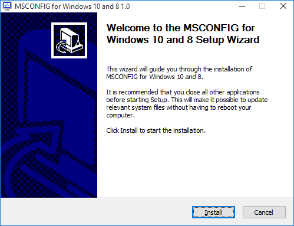 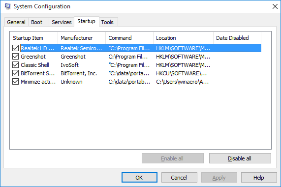The installer inlcudes the classic msconfig.exe app with the startup tab in the msconfig UI so you will be able to manage your startup apps. It handles the "msconfig" command in the Run dialog. Also, it doesn't replace system files, instead it adds a new file, %windir%\system32\msconfig1.exe.
You can uninstall the app any time from Settings - Apps and features.
The Aurora screen saver for Windows 10, Windows 8.1, Windows 8, and Windows 7. It was shipped with Windows Vista but was removed in Windows 7 and higher.
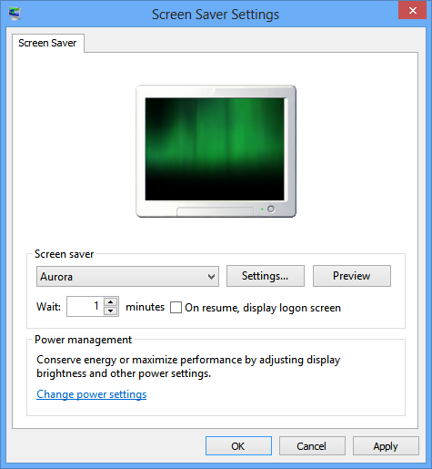The pack contains the Aurora screensaver for 32bit and 64bit Windows versions. Use the appropriate file. Note that the exe file is nothing more than just a handy GUI for the file copy operation.
The classic Paint (mspaint) app taken from Windows 10 Build 14393. You can install it on Windows 11 and enjoy the faster and more usable image editor than the built-in one. Another good thing is that this Paint app doesn't include the "Paint 3D" button and Store promotion.
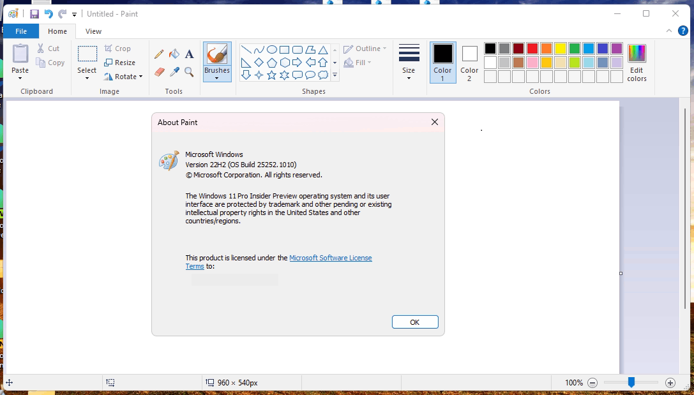 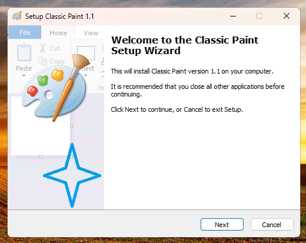You will be able to launch it as "mspaint.exe" from the Run dialog or from the taskbar's search box or from the Start menu. No system files will be replaced. It will be installed alongside the default built-in Paint app.
You can even run them simultaneously. Just select the desired app shortcut from the Start menu, or launch both if you need. The Windows 10 version will be set as the default mspaint.exe app.
When installing, you'll be prompted to turn off the App execution alias in the Settings app. If you omit this step, you will have the default inbox mspaint.exe running by default.
Besides, the classic Paint will be integrated into Windows, so it will be available in the context menu of images. Also, you can set it as the default app for any of its supported formats.
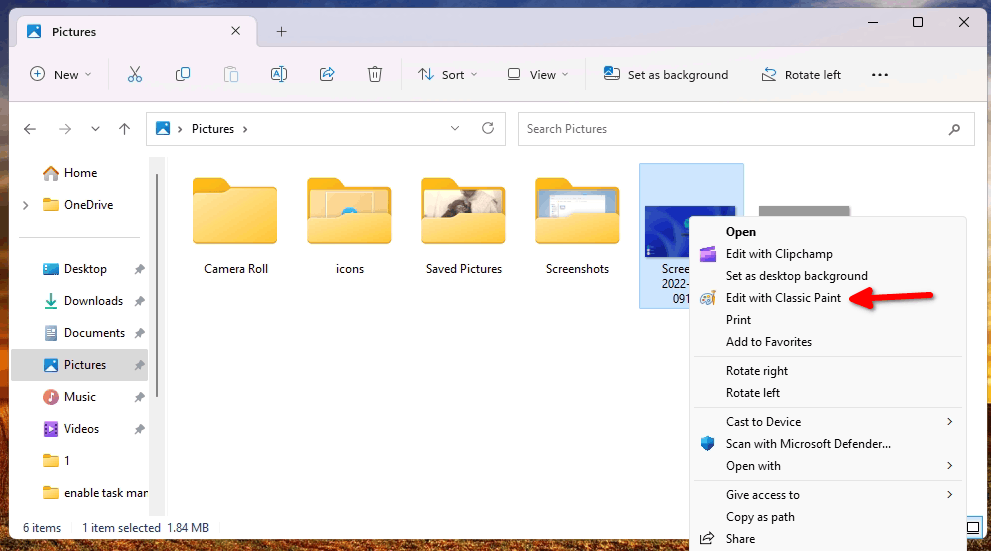 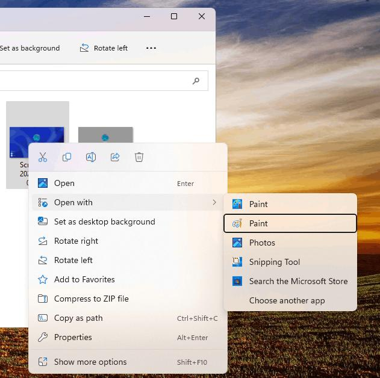It supports all Windows languages and locales, so its UI will be translated automatically. The installer detects what languages you have installed in your Windows, and will provide the appropriate MUI files automatically. It comes with the following locales:
af-za, am-et, ar-sa, as-in, az-latn-az, be-by, bg-bg, bn-bd, bn-in, bs-latn-ba, ca-es, ca-es-valencia, chr-cher-us, cs-cz, cy-gb, da-dk, de-de, el-gr, en-gb, en-us, es-es, es-ms, et-ee, eu-es, fa-ir, fi-fi, fil-ph, fr-ca, fr-fr, ga-ie, gd-gb, gl-es, gu-in, ha-latn-ng, he-il, hi-in, hr-hr, hu-hu, hy-am, id-id, ig-ng, is-is, it-it, ja-jp, ka-ge, kk-kz, km-kh, kn-in, ko-kr, kok-in, ku-arab-iq, ky-kg, lb-lu, lo-la, lt-lt, lv-lv, mi-nz, mk-mk, ml-in, mn-mn, mr-in, ms-my, mt-mt, nb-no, ne-np, nl-nl, nn-no, nso-za, or-in, pa-arab-pk, pa-in, pl-pl, prs-af, pt-br, pt-pt, quc-latn-gt, quz-pe, ro-ro, ru-ru, rw-rw, sd-arab-pk, si-lk, sk-sk, sl-si, sq-al, sr-cyrl-ba, sr-cyrl-rs, sr-latn-rs, sv-se, sw-ke, ta-in, te-in, tg-cyrl-tj, th-th, ti-et, tk-tm, tn-za, tr-tr, tt-ru, ug-cn, uk-ua, ur-pk, uz-latn-uz, vi-vn, wo-sn, xh-za, yo-ng, zh-cn, zh-tw, zu-za
Finally, you can uninstall it like any other app. Head up over Settings > Apps > Installed apps, find Classic Paint, and uninstall it. This will revert all the changes to their defaults, and your default mspaint app will be the inbox app.
All the above software is copyrighted by its respective copyright holders. We do not own it, or sell or license it to you. Use it under your own responsibility. This software is distributed 'as-is', without any express or implied warranty.
This website is not affiliated with anyone. Built with Skeleton and Visual Studio Code.